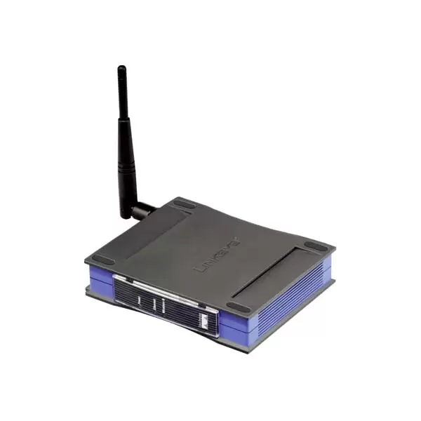

Modem (modulator-demodulator) converts a digital signal of a computer into analogue signal for transmission over an existing telephone line.
It also does the opposite thing, to enable the computer to process the data, it coverts analogue signals from a telephone line into digital signals.

Hubs are hardware devices that can have devices connected to them. They connect together to form LAN (local area network).
Its job is to receive data packets (group of data) and show them to every computer that uses the network.
It's not stable so it's not the best way to give out data.
A bridge connects a LAN to another LAN that uses the same protocol. They connect so that both LANs can work the same like it’s the same LAN.
